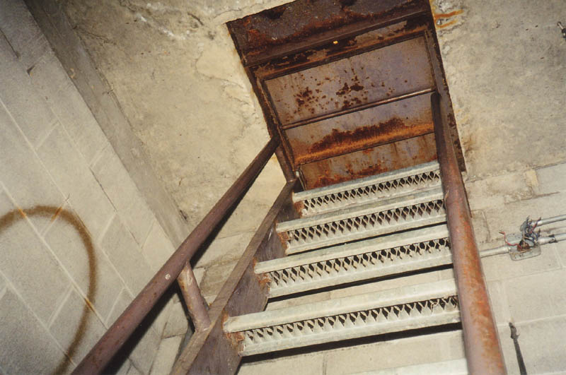
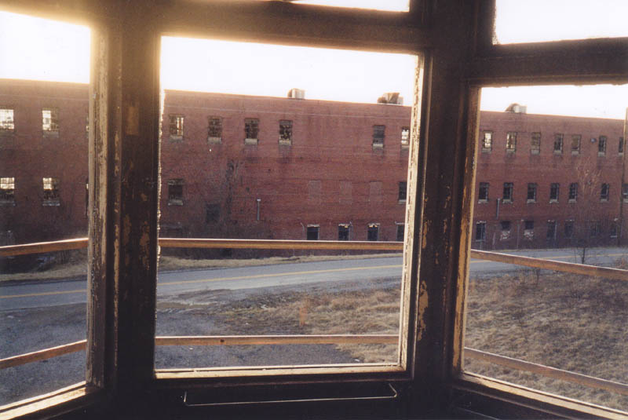

Junction City Prison
Guard Tower

There's only one guard tower left from the days when Junction City was a functioning prison. Two of the others were removed and now serve--at ground level--as admission booths at the Perry County Fairgrounds in New Lexington.

The stairs leading up to the guard booth are very narrow and hard to climb. The first time I went up I hit my head on the edge of the metal hatch and said fuck a lot. There's a decent view from the top--at least in one direction.

Back